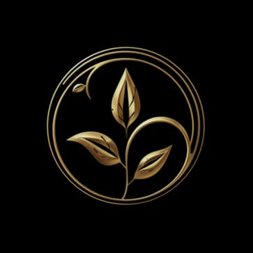

TOHUMUN YOLCULUĞU: deneyim haritası
JOURNEY OF THE SEED: tasting map
uyanış
arpacık soğan - ekşi
maya - armola
maya - armola
hafıza
karakılçık buğdayı - isli çam
tereyağı
tereyağı
anatomi
pembe domates essence -
fesleğen yağı
fesleğen yağı
kök
kömürde sakız kabağı -
kabak çiçeği
kabak çiçeği

derinlik
sous-vide çipura -
deniz börülcesi
deniz börülcesi
ateş
dana kaburga - aydın
siyahı külü
siyahı külü
arınma
reyhan sorbe - yeşil
elma asidi
elma asidi
dönüş
yanık sütlaç zarı -
karadut jölesi
karadut jölesi